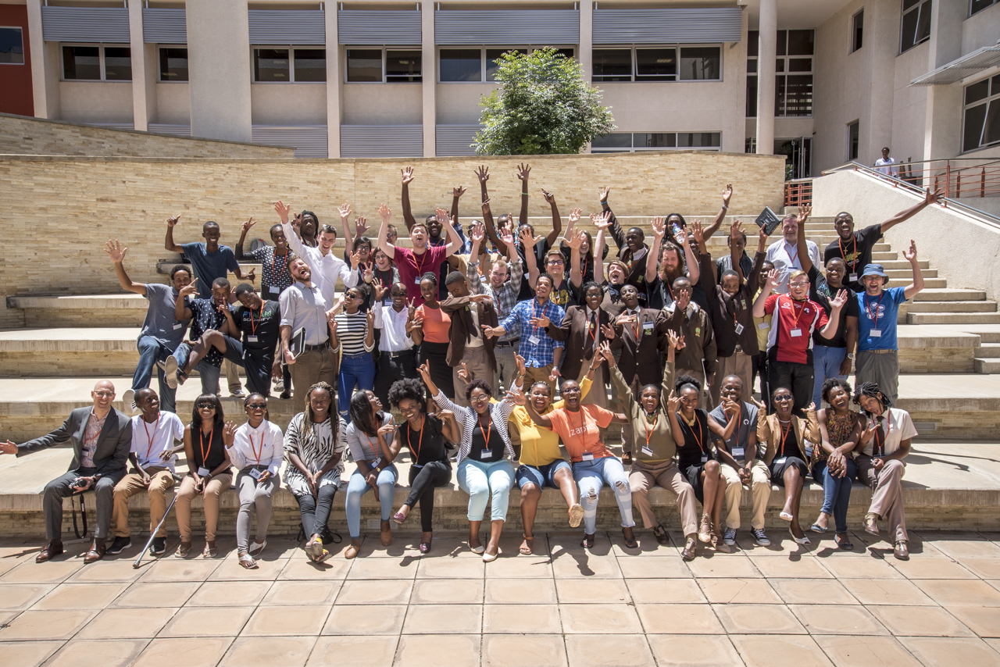

Themes
reveal.js comes with a few themes built in:
Black (default) -
White -
League -
Sky -
Beige -
Simple
Serif -
Night -
Moon -
Solarized
Poverty

Judith + Daniele
Monday
- Daniele Procida: Introduction
- Daniele Procida: Python & what to do with it
- Workshop: Software installation party
- Workshop: Introduction to Python for beginners with Daniele Procida
- Workshop: Introduction to Git and GitHub with Jason Rudolph
- Lightning talks
Tuesday
- Vincent Knight: Walking on pavements
- Tuyoleni Hamata: The Art of Shuhari in Mastering Software Development
- Tom Daley: Low bandwidth web design
- Jason Young: Queue simulation in Python
- Lightning talks
- Geraint Palmer: Q-learning algorithms in Python
- Alan McNeil Jackson: How to be useful: participation, programming and you
- Loek van Gent: Introduction to automated testing
- Lightning talks
Wednesday
- Web development in Python and Django with Tom Daley
- Simulating queues with Jason Young
- Unsupervised machine learning with Geraint Palmer
- Distributed Messaging with Barry Scheepers
- Introduction to automated testing with Loek van Gent
- GitHub Office Hours with Jason Rudolph
- Introduction to Game Theory with Vincent Knight
Thursday
- Let’s build an application!
- Where do we go next?
- Presentations
- Closing addresses


Not an Axelrod slide

Monday
- Installation clinic
- Git: the very basics
- Python for absolute beginners
- Lightning Talks!
- Conference Dinner
Tuesday/Wednesday: Talks
- Loek van Gent: Keynote: So - this idea of yours...
- Geraint Palmer: Simulating queues with Ciw
- Ibrahim Diop: The African Way
- Iwan Vosloo: What's the point of Object Orientation?
- Maik Hoepfel: The life of a freelancer
- Daniele Procida: Introducing django CMS
- Katie Barr: Image recognition via template matching
- Humphrey Butau: Vim as a Python IDE
- Llewellyn van der Merwe: Building a business on open source software
- Anna Makarudze: About learning to program
- David MacIver: How do I know if this code works?
- Fernando Masanori Ashikaga: Python: the next Brazilian generation
- Lightning Talks!
Thursday: Talks
- Simon Cross: MomConnect
- Vince Knight: Christmas gifts, evolution and Python
- Helen Sherwood-Taylor: Planning a Python Event
- Barry Scheepers: Web sockets
- Katie Barr: Simulating quantum systems in less than 20 lines of pure Python
- Lemoene Smit: Open Source LIMS in Namibian and Zimbabwean health care laboratories.
- Maik Hoepfel: Working with APIs
- Blake Griffith: Introducing Conda
- Aisha Bello: My Journey through Python
- Daniele Procida: Rider/Coder
- Lightning Talks!
Friday: Workshops
- David MacIver: Automated testing and Hypothesis
- All-day Django clinic
- Fernando Masanori Ashikaga: Introduction to Python
- All-day Python clinic
- Simon Cross: Building a simple interactive fiction game with Asyncio and WebSockets.
- Anna Makarudze: Developing Software using Python and Django to solve real life problems
- Blake Griffith: Package and environment with conda
- Maik Hoepfel: Your first pull request
- Daniele Procida: Getting started with django CMS
2017
Tuesday
- Lamech Amugongo - Introduction to data analytics; how to analyse data with Python
- Code Doctor/install party/beginner tutorial
- Meinolf Simbenda - Web2Py; Development of web applications with Python
- Nikoleta Glynatsi and Vincent Knight - Game Theory with Python
- Anna Makarudze - Testing your Django App
Wednesday
- Anna Makarudze & Humphrey Butau How we organised PyCon Zimbabwe
- Annastasia (Anna) Shipepe Python the superlative language for beginners
- Gabriel Tuhafeni Nhinda UX for developers
- Maik Hoepfel Raspberry Pi and IOT
- Nashilongo Gervasius and Annastasia Shipepe The Internet Society, Namibian Chapter
- Ronald Maravanyika Working with Python for women and children in Zimbabwe
- Geraint Palmer Producing Pretty Plots in Python
- Nikoleta Glynatsi Using Python to access open research literature
- Christian Christells A Python Developer's adventures in GIS
- Daniele Procida Documentation will save your project!
- Lightning talks
Thursday
- Helen Sherwood-Taylor
- Iwan Vosloo A whirlwind tour of test setup
- Nikoleta Glynatsi Writing tests for research software
- Ronald Maravanyika How to capture downtown loss on a production (Python & Flask)
- Humphrey Butau Django Cookie-Cutter
- Eva Gonzales Contreras
- Geraint Palmer CIW
- Vincent Knight Markov Chains in Python
- Loek van Gent Continuous Integration
- Nashilongo Gervasius Namibia as a Knowledge Society by 2030: The Future Scenario in ICT for Sustainable Development
- Lightning talks